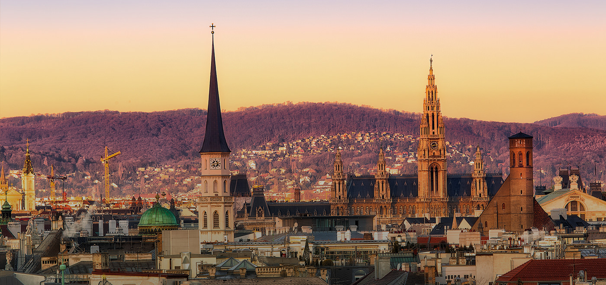

W Wiedniu jest tak zielono, jak w mało którym innym mieście. Tutaj można porządnie odpocząć – nawet zabytkowe Śródmieście kusi wieloma parkami – i bez przeszkód uprawiać sport. Miasto dysponuje doskonale funkcjonującą infrastrukturą miejską i uchodzi za jedną z najbezpieczniejszych metropolii świata.
